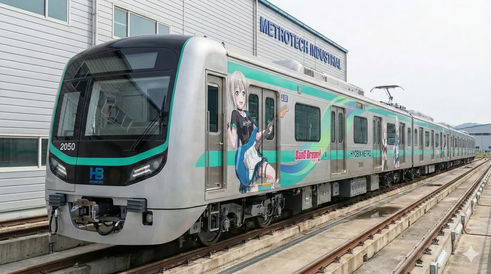
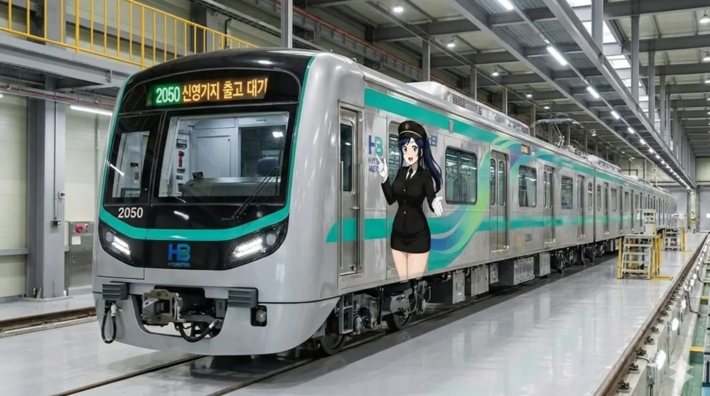
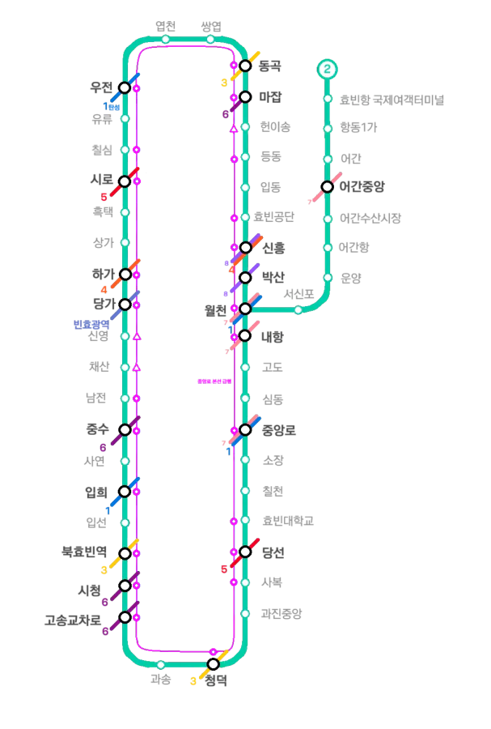

|
|||
.webp)
효빈교통공사 2000호대 전동차 (1세대)
.webp)
효빈교통공사 2000호대 전동차 (2세대)
  촬영지: 신영차량사업소에서 찍은 사진 2호선 캐릭터 하루빈의 래핑열차이다.
|
|||
| 노선도 | |||
|---|---|---|---|
|
 |
|||
| 노선 정보 | |||
| 노선 분류 | 도시철도 | ||
| 차량 분류 | 중형 중전철 | ||
| 기점 | 중앙로역(본선) | ||
| 종점 | 중앙로역(순환) 월천, 효빈항국제여객터미널(지선) | ||
| 역 수 | 총 49개 (본선 41개, 어간지선 8개) | ||
| 구성 노선 | 효빈 도시철도 2호선 | ||
| 상징색 | 초록색 (#00CCAA) | ||
| 개통일 | 1989년 2월 3일 (41주년) | ||
| 소유자 | 효빈광역시 | ||
| 운영사 | 효빈교통공사 | ||
| 사용 차량 | 효빈교통공사 2000호대 (1,2세대) | ||
| 차량기지 |
항동차량사업소[1] 입동차량주박기지 신영차량사업소(예정) |
||
| 노선 제원 | |||
| 노선연장 | 본선: 46.57km 어간지선: 10.64km 도합: 57.21km | ||
| 궤간 | 1,435㎜ | ||
| 선로구성 | 복선 | ||
| 급전방식 | 직류 1,500V 가공전차선[2] | ||
| 신호방식 | Kyosan Signal ATC/ATO | ||
| 최고속도 | 75㎞/h | ||
| 표정속도 | 30.7㎞/h | ||
| 통행방향 | 우측통행 | ||
| 지상구간 |
효빈항터미널 ↔ 항동차량기지 효빈공단 ↔ 입동주박기지 |
||
| 개통 연혁 |
1989.2.3(1차) 월천 ↔ 청덕 1995.2.3(2차) 청덕 ↔ 내항 2009.2.3(3차) 어간지선 |
||

1. 개요
효빈 도시철도의 한 노선이자 효빈권 전철의 운행 계통으로, 1995년 2월 3일에 완전개통해 순환선이 됐다. 운영기관은 효빈교통공사이며 운행하는 열차는 효빈교통공사 2000호대 전동차, 통행방식은 우측통행이다. 노선색은 ● 초록색이며, 색의 뜻은 새싹이다. 기본적으로 순환선이지만 차량기지 입출고 선로를 활용해 만든 어간지선이 있다.
2. 건설 목적
- 1호선 및 전차가 없는 지역의 대중교통 접근 편의성 제고
- 효빈광역시 주요지역 및 시청 이전으로 인한 중앙로 지역 시청 이동 편의성 증진
- 본선(중앙로순환선): 기존 시청 노후화와 확장불가로 새로운 부지인 북구 고송동으로 이전을 추진하면서 주변 도심이 이미 발달된 상황에다, 중앙로 지역의 반발을 최소화하기 위한 수단으로서 개통하였다.
- 월천지선(어간지선): 남구 항동 및 어간동지역의 빠른 이동 및 효빈항 여객터미널 이동 편의성 용이화.
3. 역사
1981년 2월, 효빈광역시 1호선에 이은 2호선을 통해 당시 독재정권에 대한 반발을 잠재우고자 중앙정부가 계획을 시작하였으며, 1985년 1월 22일에 1단계구간 월천 ↔ 청덕 구간이 착공하였고 1989년 2월 3일에는 1단계 구간이 개통하였다.
1990년 3월 4일에는 2단계 구간인 청덕 ↔ 내항 구간이 착공하여 1995년 2월 3일에 개통하였고 순환선이 이때 만들어진다. 이때 선로는 효빈항국제여객 터미널 역까지 지상으로 있어 빈효선과 공용으로 차량기지를 이용하기도 하였다.
그러나 빈효선 광역전철등의 계획이 시작되자 빈효선 선로 포화문제로 인해 2호선 단일 선로구간이 필요하게 되었고 결국 2000년에 계획을 시작하였다. 2003년 4월 20일 2호선 어간지선구간(3단계)구간인 월천 ↔ 효빈항 국제여객터미널구간이 착공하였고 2007년 중반기에 개통 예정이었으나 윤대환 시정의 철도계획 전면 중지 선언, 공사 중단등으로 인해 한동안 공정률 90% 인 상태에서 진전이 없었다.
그러나 윤대환 전 시장이 선거법 위반으로 2007년 11월 당선무효가 되고 2008년 6월에 박현만 시장이 재보궐로 복귀하자마자 공사가 재개되었고 결국 2009년 2월 3일에서야 3단계 구간이 개통되었다. 이를 계기로 남구 어간, 항동 주민은 윤대환을 더 혐오하게 되었다는 것이 포인트다.
4. 환경
4.1. 안내방송 BGM
효빈교통공사의 1~8호선 통합 안내방송 시스템을 따르고 있습니다.
| 구분 | 내선/외선 상행 | 내선/외선 하행 | 종착 | 환승 | 출발 | ||
|---|---|---|---|---|---|---|---|
| 완행 | 급행 | 완행 | 급행 | ||||
| 일반 | 파도내음 | 휘황곡 | 물길소리 | 소라의눈물 | 잔잔바다 | 뱃사공 삼중주 | 효빈교통공사 로고송 |
| 콜라보 | HAF(효빈 애니메이션 페스티벌) 기간 한정 사용 (매년 BGM 변경) | ||||||
4.2. 안내방송 텍스트
| 언어 | 일반 및 환승 안내방송 | 종착 안내방송 |
|---|---|---|
| 한국어 | "이번 역은 [역명], [역명]역입니다. 내리실 문은 [방향]입니다. [환승노선]으로 갈아타실 고객께서는 이번 역에서 내리시기 바랍니다." | "이번 역은 이 열차의 마지막 역인 [종착역], [종착역]역입니다. 내리실 문은 [방향]입니다. 오늘도 효빈교통공사 열차를 이용해 주셔서 고맙습니다. 안녕히 가십시오." |
| 영어 | "This stop is [역명], [역명]. The doors are on your [방향]. You can transfer to the [환승노선]." | "This stop is [종착역], [종착역]. The last station. The doors are on your [방향]. Thank you for traveling with HyobinMetro." |
| 중국어 | "前方到站是 [역명] 站。 需要换乘 [환승노선] 的乘客，请在本站下车。" | - |
| 일본어 | "次は、[역명]、[역명]駅です。 [환승노선] はお乗り換えです。" | - |
5. 역할
효빈1호선이 효빈시와 약산시, 탄성군, 남구지역 등 시내외의 연계를 위한 중심 노선이라면, 효빈 2호선은 효빈의 주요 도심인 고송신도시, 과진지구, 당선지구, 중앙로원도심, 우전지구, 중수지구, 칠심지구, 안천지구, 추후에 개발될 쌍엽지구 및 남구 항동과 어간동을 연결하는 핵심지를 경유하는 순환노선이라고 볼수 있다.
기본적으로 도심간 연결을 위한 노선의 역할을 보이지만, 효빈공단과 헌이송공업지구를 연결하여 통근 수요를 챙겼고 1호선과 전차가 없는 지역에서 접근하기 어려웠던 효빈대학교를 7호선 환승없이 바로 가거나 수월하게하는 역할을 하였으며, 특히 효빈대학교역은 효빈대 내부도로 중심지하에 있어 많은 학생들이 학교통학을 위해 이용한다. 당선역 역시 효빈대 윗쪽에 붙어있어 예술계열 학생들이 이용하기 좋은 편이다.
효빈대학교 이외에도 효빈복지대학교가 위치한 사복동에도 정차하여 일부 수요가 있었으며(현재는 3호선에 정문 바로앞에 생겨서 2호선 이용객은 사복동 중심지 가는 경우가 대부분이다.), 등동역에서는 엽월대, 덕북대 효빈캠, 사연역에서는 평안명대학교, 북효빈역에서는 효빈교대, 과진중앙역에서는 중촌대, Hist, 해총대, 흑택역에서는 광연대학교, 어간중앙역에서는 효빈보건대, 해양대 2캠, 폴리텍을 연결하여 대학가를 훑기 때문에 대학생들이 가장 많이 타는 노선이다.
6. 역 목록
6.1. 중앙로순환선(본선)
| 역번 | ㎞ | 역명 | 승강장 | 횡단 | 급행 | 환승 | 소재지 |
|---|---|---|---|---|---|---|---|
| △ 내항 (0.9㎞) | |||||||
| 201 | 0.0 | 월천(月川) | │■││■││■│(지하 2층) | ○ | 급 |   (어간지선) (어간지선) | 남구 |
| 202 | 1.2 | 박산(朴山) | ■│││■ (지하 2층) | × | - |  | 남구 |
| 203 | 2.4 | 신흥(新興) | ■││■ (지하 2층) | ○ | 급 |  | 남구 |
| 204 | 3.4 | 효빈공단(孝彬工團) | ■│││■ (지하 1층) | ○ | 급(출근) | - | 남구 |
| 205 | 4.6 | 입동(立洞) | ■│││■ (지하 2층) | △ | - | - | 청엽구 |
| 206 | 5.9 | 등동(덕북대 효빈캠퍼스) | ■││■ (지하 3층) | ○ | 급 | - | 청엽구 |
| 207 | 7.2 | 헌이송(엽월대) | ■│││■ (지하 2층) | △ | 급(출근) | - | 청엽구 |
| 208 | 8.6 | 마잡(馬 雑) | ■││■ (지하 2층) | △ | 급 |  | 청엽구 |
| 209 | 10.0 | 동곡(桐谷) | │■│ (지하 3층) | ○ | 급 |  | 창전구 |
| 210 | 11.2 | 쌍엽(双葉) | ■│││■ (지하 2층) | △ | - | - | 창전구 |
| 211 | 12.0 | 엽천(葉川) | ■│││■ (지하 2층) | △ | - | - | 창전구 |
| 212 | 12.9 | 우전(宇田) | │■│ (지하 3층) | ○ | 급 | | 청엽구 |
| 213 | 13.6 | 유류(瑠唯) | │■││ (지하 3층) | ○ | - | - | 창전구 |
| 214 | 14.6 | 칠심(七深) | ■││■ (지하 2층) | △ | 급 |  (예정) (예정) | 창전구 |
| 215 | 16.2 | 시로(市路) | ■││■ (지하 2층) | ○ | 급 |  | 창전구 |
| 216 | 18.1 | 흑택(광연대) | │■│ (지하 3층) | ○ | 급 | - | 탄성군 |
| 217 | 19.1 | 상가(上街) | │■││ (지하 3층) | ○ | - | - | 안천구 |
| 218 | 20.2 | 하가(下街) | │■│ (지하 3층) | ○ | 급 | | 안천구 |
| 219 | 21.3 | 당가(唐可) | │■││ (지하 3층) | ○ | 급 |  | 안천구 |
| 220 | 23.3 | 신영(新榮) | │■│ (지하 3층) | ○ | 급(출근) | - | 북구 |
| 221 | 24.2 | 채산(彩山) | │■││ (지하 3층) | ○ | 급(출근) | - | 북구 |
| 222 | 25.1 | 남전(南田) | │■│ (지하 3층) | ○ | 급 | - | 북구 |
| 223 | 26.0 | 중수(中須) | │■│ (지하 3층) | ○ | 급 | | 북구 |
| 224 | 27.6 | 사연(평안명대) | │■││ (지하 3층) | ○ | - | - | 북구 |
| 225 | 28.8 | 입희(종합운동장) | │■│ (지하 3층) | ○ | 급 | | 북구 |
| 226 | 29.9 | 입선(立仙) | │■││ (지하 3층) | ○ | - | - | 북구 |
| 227 | 30.9 | 북효빈역(효빈교대) | │■│ (지하 3층) | ○ | 급 | | 북구 |
| 228 | 32.0 | 시청(市廳) | ■││■ (지하 2층) | △ | 급 | (예정) | 북구 |
| 229 | 33.5 | 고송교차로(高松交叉路) | ■││■ (지하 2층) | ○ | 급 | | 북구 |
| 230 | 34.6 | 과송(고송공원) | ■│││■ (지하 2층) | △ | - | - | 북구 |
| 231 | 35.7 | 청덕(淸德) | ■││■ (지하 2층) | ○ | 급 | | 서구 |
| 232 | 36.7 | 과진중앙(중촌대) | ■│││■ (지하 2층) | ○ | 급 | - | 서구 |
| 233 | 37.6 | 사복(社福) | ■││■ (지하 2층) | △ | - | - | 서구 |
| 234 | 39.2 | 당선(當選) | ■││■ (지하 2층) | ○ | 급 | | 서구 |
| 235 | 40.0 | 효빈대학교(孝彬大學敎) | ■││■ (지하 2층) | × | 급 | (간접) | 서구 |
| 236 | 40.8 | 칠천(효빈대병원) | ■│││■ (지하 2층) | △ | - | (간접) | 서구 |
| 237 | 41.7 | 소장(북문) | │■││ (지하 2층) | ○ | - | - | 서구 |
| 238 | 43.0 | 중앙로(中央路) | │■│ (지하 3층) | ○ | 급 | | 중구 |
| 239 | 44.4 | 심동(心洞) | ■│││■ (지하 2층) | △ | - | (간접) | 중구 |
| 240 | 45.5 | 고도(高道) | ■│││■ (지하 2층) | ○ | - | - | 중구 |
| 241 | 46.6 | 내항(內港) | ■││■ (지하 3층) | × | 급 | | 중구 |
| ▽ 월천 (0.9㎞) | |||||||
6.2. 어간지선
| 역번 | ㎞ | 역명 | 승강장 | 횡단 | 급행 | 환승 | 소재지 |
|---|---|---|---|---|---|---|---|
| 200 | 0 | 월천(月川) | │■││■││■│(지하 2층) | ○ | 급 | 본선 | 남구 |
| 200-1 | 1.79 | 서신포(西新浦) | │■││■│(지하 2층) | ○ | - | - | 남구 |
| 200-2 | 2.79 | 운양(雲陽) | ■││■ (지하 2층) | ○ | - | (예정) | 남구 |
| 200-3 | 3.82 | 어간항(漁間港) | ■││■ (지하 2층) | ○ | - | - | 남구 |
| 200-4 | 5.12 | 어간수산시장 | ■││■ (지하 2층) | △ | - | - | 남구 |
| 200-5 | 6.1 | 어간중앙(漁間中央) | ■││■ (지하 2층) | ○ | - | | 남구 |
| 200-6 | 7.33 | 어간(漁間) | ■││■ (지하 3층) | × | - | - | 남구 |
| 200-7 | 8.87 | 항동1가(港洞一街) | │■│ (지하 2층) | ○ | - | - | 남구 |
| 200-8 | 10.6 | 효빈항 국제여객터미널 | │■││■│ (지하 1층) | ○ | - | - | 남구 |
7. 환승역
환승역 일람 (데이터 준비 중)
8. 소재지
| 노선 | 운영사 | 소재지 | 구분 | 구간 | 역 개수 |
|---|---|---|---|---|---|
| 중앙로순환선 | 효빈교통공사 | 효빈광역시 | 중구 | 내항역~중앙로역 | 4 |
| 서구 | 소장역~청덕역 | 7 | |||
| 북구 | 과송역~신영역 | 11 | |||
| 안천구 | 당가역~상가역 | 3 | |||
| 탄성군 | 흑택역 | 1 | |||
| 창전구 | 시로역~유류역, 엽천역~동곡역 | 6 | |||
| 청엽구 | 우전역, 마잡역~입동역 | 5 | |||
| 남구 | 효빈공단역~월천역 (△ 월천역 포함) | 4 | |||
| 탄성지선 | 남구 | 서신포역~효빈항역 (▽ 내항역 제외) | 8 |
9. 현존 운행 계통 및 급행열차
효빈 도시철도 2호선은 도심과 부도심, 그리고 수많은 대학가를 둥글게 잇는 거대한 순환선이다. 하지만 일각의 "순환선인데 왜 급행이 있냐?"는 의문을 한 방에 불식시킬 정도로, 알짜배기 주요 거점만을 미친 듯이 찔러주는 급행열차(Rapid) 시스템이 완벽하게 갖추어져 있다. 출퇴근 시간에는 출근급행이라는 변종까지 등장하여 진정한 헬게이트를 오픈한다.
9.1. 운행 패턴 (내선/외선)
- 본선 (순환): 우측통행을 기준으로 시계 방향으로 도는 외선순환과 반시계 방향으로 도는 내선순환으로 나뉜다. 막차 시간대에는 얄짤없이 차량기지 입고를 위해 중앙로행이나 고송교차로행으로 타절되는 열차가 한 대씩 존재한다.
이거 타고 푹 자다가 중간에 끊기면 심야 할증 붙은 택시비가 살벌하다. - 어간지선: 본선에서 갈라져 나와 효빈항국제여객터미널과 월천 사이를 오가는 셔틀 성격의 짤막한 지선이다. 여객터미널을 찾는 보따리상, 관광객, 그리고 남구 항동 거주민들이 이 지선의 주고객이다.
9.2. 급행열차 (Rapid) 인프라 및 특징
효빈 2호선의 급행은 주요 대학가와 핵심 상업지구, 굵직한 환승 거점만을 날카롭게 훑고 지나가기 때문에 단연코 "통학생들의 생명줄"이자 "직장인들의 구원자"로 불린다. 또한, 특정 역에만 게릴라처럼 정차하는 출근급행이 따로 있으니 시간표를 매의 눈으로 확인해야 한다.
| 급행 정차역 | 다음 역까지 (km) | 급행 정차역 | 다음 역까지 (km) |
|---|---|---|---|
| 월천 (201) | 2.4 | 신영 (220) ※출근급행 | 0.9 |
| 신흥 (203) | 1.0 | 채산 (221) ※출근급행 | 0.9 |
| 효빈공단 (204) ※출근급행 | 2.5 | 남전 (222) | 0.9 |
| 등동 (206) | 1.3 | 중수 (223) | 2.8 |
| 헌이송 (207) ※출근급행 | 1.4 | 입희 (225) | 2.1 |
| 마잡 (208) | 1.4 | 북효빈역 (227) | 1.1 |
| 동곡 (209) | 2.9 | 시청 (228) | 1.5 |
| 우전 (212) | 1.7 | 고송교차로 (229) | 2.2 |
| 칠심 (214) | 1.6 | 청덕 (231) | 1.0 |
| 시로 (215) | 1.9 | 과진중앙 (232) | 2.5 |
| 흑택 (216) | 2.1 | 당선 (234) | 0.8 |
| 하가 (218) | 1.1 | 효빈대학교 (235) | 3.0 |
| 당가 (219) | 2.0 | 중앙로 (238) | 3.6 |
| 내항 (241) | → 다시 월천(0.9km)으로 순환 | ||
- 출근급행의 묘미: 효빈공단, 헌이송, 신영, 채산역은 평시 급행열차의 경우 문짝도 안 열어주고 무정차로 쌩까고 지나가지만, 출퇴근 시간대 한정으로 문이 자비롭게 열리는 출근급행이 투입된다. 공단이나 굵직한 업무지구로 출근하는 좀비 직장인들을 위한 맞춤형 복지 서비스다.
- 중선(가운데 선로)을 이용한 무대피 추월: 1호선과 마찬가지로 2호선 역시 급행이 정차하지 않는 대다수 역의 한가운데에 통과용 중선이 당당하게 뚫려 있다. 완행열차가 승강장에서 하세월 승객을 태우고 있을 때, 급행열차가 가운데 선로를 타고 미친 듯한 굉음과 함께 칼바람처럼 추월해버린다.
완행 타고 가다가 창밖으로 쌩 지나가는 급행을 보면 킹받기 그지없다. - 압도적인 역간 질주 (중앙로~내항~월천): 도심지를 벗어난 외곽 구간이나 역간 거리가 징그럽게 먼 곳(중수~입희 2.8km, 중앙로~내항 3.6km)에서는 급행 기관사가 엑셀을 사정없이 밟아버린다. "이 선로는 내 거다!"를 외치듯 풀악셀을 밟아버리기 때문에 시간 단축 효과가 엄청나다.
10. 운행 차량
재적된 편성은 본선 53편성, 어간지선 7편성으로 도합 60편성의 대군이다. 본선은 8량 53편성(424량)이 빽빽하게 돌아가고, 어간지선은 6량 6편성, 5량 1편성(41량)으로 셔틀을 돈다.
11. 역별 승하차 통계
2025년 기준 효빈 2호선의 일평균 승하차 순위표이다. 환승역의 경우 타 노선의 순수 승하차객은 깔끔하게 제외한 수치다.
| 효빈 도시철도 2호선 노선 총합 | ||||||
|---|---|---|---|---|---|---|
| 역수 | 구간 | 역당 일평균 | 일평균 승하차 | 2025년 총합 | 최다 이용 | 최저 이용 |
| 49개 | 전체 구간 | 16,697명 | 818,168명 | 298,631,320명 | 고송교차로 | 서신포 |
| 41개 | 중앙로순환선 | 17,137명 | 702,634명 | 256,461,410명 | 고송교차로 | 입동 |
| 8개 | 효빈항터미널↔월천 | 14,441명 | 115,534명 | 42,169,910명 | 월천 | 서신포 |
| 일일 이용객 수 구간별 분포 | ||||||
|---|---|---|---|---|---|---|
| 역수 | 구간 | 5만명 이상 | 2만~5만 | 1만~2만 | 5천~1만 | 5천 이하 |
| 49개 | 전체 구간 | 1개 | 16개 | 13개 | 16개 | 3개 |
| 순위 | 역명 | 일평균 | 2025년 총합 | 순위 | 역명 | 일평균 | 2025년 총합 |
|---|---|---|---|---|---|---|---|
| 1 | 고송교차로 | 73,452 | 26,809,980 | 26 | 어간중앙 | 11,578 | 4,225,970 |
| 2 | 당선 | 41,835 | 15,269,775 | 27 | 소장(북문) | 10,642 | 3,884,330 |
| 3 | 효빈대학교 | 37,562 | 13,710,130 | 28 | 하가 | 10,638 | 3,882,870 |
| 4 | 시청 | 35,941 | 13,118,465 | 29 | 유류 | 10,391 | 3,792,715 |
| 5 | 월천 | 30,612 | 11,173,380 | 30 | 사연 | 9,723 | 3,548,895 |
| 6 | 청덕 | 28,742 | 10,490,830 | 31 | 항동1가 | 8,867 | 3,236,455 |
| 7 | 중수 | 28,819 | 10,518,935 | 32 | 헌이송 | 8,762 | 3,198,130 |
| 8 | 마잡 | 26,634 | 9,721,410 | 33 | 박산 | 8,421 | 3,073,665 |
| 9 | 입희 | 26,427 | 9,645,855 | 34 | 내항 | 8,318 | 3,036,070 |
| 10 | 쌍엽 | 23,618 | 8,620,570 | 35 | 등동 | 8,245 | 3,009,425 |
| 11 | 칠심 | 23,541 | 8,592,465 | 36 | 어간항 | 8,051 | 2,938,615 |
| 12 | 중앙로 | 22,001 | 8,030,365 | 37 | 엽천 | 8,041 | 2,934,965 |
| 13 | 사복 | 20,731 | 7,566,815 | 38 | 어간수산시장 | 7,502 | 2,738,230 |
| 14 | 북효빈 | 21,382 | 7,804,430 | 39 | 채산 | 7,614 | 2,779,110 |
| 15 | 신흥 | 20,417 | 7,452,205 | 40 | 칠천 | 7,378 | 2,692,970 |
| 16 | 우전 | 20,351 | 7,428,115 | 41 | 입선 | 7,125 | 2,600,625 |
| 17 | 동곡 | 19,418 | 7,087,570 | 42 | 흑택 | 6,364 | 2,322,860 |
| 18 | 효빈항터미널 | 18,693 | 6,822,945 | 43 | 상가 | 6,031 | 2,201,315 |
| 19 | 당가 | 19,341 | 7,059,465 | 44 | 효빈공단 | 5,518 | 2,014,070 |
| 20 | 과진중앙 | 17,732 | 6,472,180 | 45 | 고도 | 5,117 | 1,867,705 |
| 21 | 시로 | 17,094 | 6,239,310 | 46 | 신영 | 5,152 | 1,880,480 |
| 22 | 남전 | 16,653 | 6,078,345 | 47 | 심동 | 4,312 | 1,573,880 |
| 23 | 과송 | 15,987 | 5,835,255 | 48 | 입동 | 2,165 | 790,225 |
| 24 | 운양 | 14,545 | 5,308,925 | 49 | 서신포 | 1,844 | 673,060 |
| 25 | 어간 | 13,842 | 5,052,330 | ||||
12. 여담 및 마스코트
12.1. 운행 관련 여담
- 대학생들의 낭만과 지옥이 공존하는 노선: 2호선은 효빈광역시 내에 존재하는 어지간한 대학교(효빈대, 평안명대, 엽월대 등 무려 10여 개가 넘는 캠퍼스)를 죄다 훑고 지나간다. 때문에 객실 내부는 항상 각종 과잠을 입은 대학생들로 북적이며, 아침 1교시 시간대의 혼잡도는 그야말로 살인적인 공포를 자랑한다.
통학생들의 피와 땀, 그리고 두꺼운 전공책 냄새가 진득하게 서린 애환의 노선이다. - 순환선의 뫼비우스의 띠: 술에 떡이 된 대학생이나 피로에 찌든 직장인이 막차를 타고 잠들었다가, 눈을 떠보니 다시 출발했던 그 역으로 돌아와 있는(...) 기적의 무한 루프를 겪는 웃픈 사례가 심심찮게 들려온다. 다행히 효빈교통공사 측에서 막차 시간대에는 얄짤없이 중앙로역이나 고송교차로역에서 칼같이 타절시켜 승객들을 흔들어 깨워 내쫓는다.
- 급행열차와 완행열차의 숨 막히는 기싸움: 2호선은 완행과 급행이 하나의 선로를 아슬아슬하게 공유한다. 역간 거리가 먼 구간을 달릴 때 완행열차 차창 밖으로 무시무시한 굉음을 내며 중선(가운데 통과 선로)을 타고 로켓처럼 추월해버리는 급행열차를 볼 수 있다. 느긋하게 앉아있던 완행 승객들 입장에서는 눈 뜨고 코 베이는 킹받는 기분을 느낀다.
아, 이럴 줄 알았으면 3분 더 기다려서 급행 탈걸 - 출근급행의 변칙 낚시: 평소엔 눈길 한 번 안 주고 무정차로 통과하던 효빈공단이나 신영 같은 역에, 출퇴근 시간에만 슬쩍 멈춰주는 '출근급행'이 존재한다. 평시 급행인 줄 알고 아무 생각 없이 탔다가 매연 날리는 공단에 강제 하차 당하여 멍때리는 뉴비들이 많으니 타기 전에 전광판을 목숨 걸고 확인하자.
12.2. 공식 마스코트
효빈도시철도공사가 야심 차게 기획한, 일본의 철도무스메 캐릭터를 벤치마킹한 효빈메트로의 간판 마스코트 캐릭터가 존재한다.
-
상징색의 일치: 2호선의 고유 색상인 초록색(#00CCAA)이 유명 미디어 믹스 BanG Dream!의 등장인물 아오바 모카의 이미지 컬러와 완벽하게 일치한다. 이 찰떡같은 우연 때문에 효빈시 덕후들 사이에서는 2호선을 아예 '모카선'이라고 부르기도 하며, 2호선 역내 편의점에서는 유독 단팥빵(모카가 좋아하는 빵) 판매량이 폭발적으로 급증한다는 카더라가 있다.
물론 믿으면 골룸하다. -
철도 동호인들의 격렬한 반응: 초창기 노선 색깔이 발표되었을 때 "이거 대놓고 Afterglow 홍보 노선 아니냐"는 합리적 갓심 섞인 반응이 쏟아져 나왔다.
하지만 정작 공식 마스코트는 모카가 아니라 다른 캐릭터다.
| 2호선 공식 마스코트: 하루빈 (夏累彬, Ha Rubin) | |
|---|---|
|
기본형
효빈메트로 쁘띠 버전
|
|
| 성명 | 하루빈 (夏累彬 / Ha Rubin) |
| 나이 | 24세 |
| 日本名 | 夏累彬(Natsurui Akira) |
| 출신지 | 북구 고송동 |
| 학력 | 고송초 - 소요중 - 효빈종합고 - 효빈대학교 교통대학 철도운영학과 |
| 노선 | 2호선 |
| 노선 색 | #00CCAA |
| 특이사항 | 긴 짙은 네이비 블루 머리를 포니테일로 깔끔하게 올려 묶고, 크고 맑은 파란 눈을 가졌다. 금장 버튼이 박힌 검은색 차장 제복 마이와 스커트, 검은 셔츠와 넥타이로 단정함을 살렸고, 금장 엠블럼이 박힌 제모와 하얀 장갑을 착용했다. 오른손으로 확신에 찬 듯 옆을 가리키며, 왼손으로는 친절하게 열린 환영의 제스처를 취하는 매우 밝고 활기찬 성격의 소유자. |